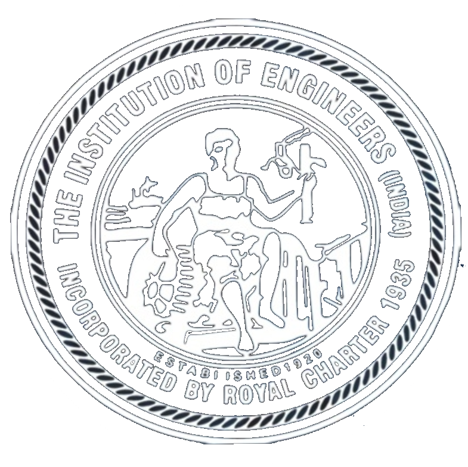

Loading latest notices...
The Kochi Local Centre is the second largest centre in India with 13,032 members. We represent 13 engineering disciplines spanning Ernakulam, Idukki, and Lakshadweep.
The Institution of Engineers (India) is the largest multi-disciplinary professional body of engineers, established in 1920 with its Headquarters located in Kolkata and incorporated under Royal Charter on 9th September, 1935 by the then His Majesty of King George V. The Royal Charter endowed the Institution with the responsibility to promote the general advancement of engineering amongst its members and persons attached to the Institution. After Independence, the Institution is a “Body Corporate” protected under Article 372 of the Constitution of India. The Institution of Engineers (India) is administered by a National Council with the President as its Head.
The Institution has been serving the engineering fraternity for over a Century with its national and international presence through 124 Centres spread all over India, 6 Overseas Chapters, 7 Fora and an Organ namely Engineering Staff College of India (ESCI), Hyderabad. The Institution encompasses 15 engineering disciplines with a Corporate membership of over 2 lakhs.
Research & Recognition: IEI has been recognized as a Scientific and Industrial Research Organization (SIRO) by the Ministry of Science & Technology, Govt. of India and provides Grant-in-Aid to UG / PG / PhD students.
International Presence: IEI represents India in several International Bodies, such as the World Mining Congress (WMC), the World Federation of Engineering Organizations (WFEO), the Commonwealth Engineers’ Council (CEC), and the Federation of Engineering Institutions of South and Central Asia (FEISCA).
Professional Standards: IEI holds the International Professional Engineers (IntPE) Register for India and was the forerunner in setting up national standards which culminated in the formation of the Bureau of Indian Standards (BIS).
The Institution also conducts Sections A & B Examinations (AMIE), recognized as equivalent to a degree in engineering by the Government of India and the UPSC. Furthermore, IEI maintains a panel of highly qualified Arbitrators to assist in disputes arising during execution of works / supplies contracts.
After the First World War, as industrialization rose in India, a need was felt to uphold quality in engineering products and operations. The Government of India formed an Indian Industrial Commission under the Chairmanship of Sir Thomas Holland. The commission recommended the establishment of an Institution as a professional body of engineers to ensure advancement of technology.
On the basis of this recommendation, the “Indian Society of Engineers” was formed on 3rd January 1919 at Calcutta. Finally, in a meeting held on 16th July 1919 at Shimla, the name was changed to The Institution of Engineers (India).
| Date | Milestone Event |
|---|---|
| 13 Sep 1920 | Formal registration in Madras under the Indian Companies Act of 1913. |
| 23 Feb 1921 | Inauguration by His Excellency Lord Chelmsford, Viceroy of India. |
| 23 Feb 1921 | Announcement of “The Viceroy’s Prize” and the 1st Technical Paper. |
| 1922 | Publication of the 1st issue of the Journal of the Institution. |
| Aug 1928 | The 1st Associate Membership examination was held. |
| 09 Sep 1935 | Royal Charter granted at the Court at Buckingham Palace. |
| 21 Oct 1937 | 1st Bye-laws approved by the Privy Council, England. |
| 01 Jan 1968 | President Dr Zakir Hossain inaugurated the HQ building in Kolkata. |
| 09 Jan 1987 | 1st Indian Engineering Congress inaugurated by PM Shri Rajiv Gandhi. |
| 15 Oct 1993 | 1st IEI Convocation held at Ranchi. |
| 22 Jan 2012 | 1st IEI-Springer Journal-Series 'C' Published. |
Loading committee members...
📍 The Institution of Engineers (India), Kochi Local Centre,
IEI bhavan,
Homoeo Hospital Road,
Near Pullepady Railway Overbridge East Side,
Near to Government Homoeo Hospital,
Kathrikadavu, Kaloor, Ernakulam, Kerala 682017
📞+91-9061000115 | 📧 ieikochi@gmail.com/kochilc@ieindia.org